このチュートリアルでは、Skylineを使用せずに作成されたトランジションリストを用い、得られた選択的反応モニタリング（SRM、多重反応モニタリング - MRMとも呼ばれます）データをSkylineで扱う方法について取り上げます。また、一致する同位体標識された内部標準ペプチドを用いた定量実験の際の、Skylineの使用方法についても紹介します。
このチュートリアルでは、MRMer1というツールの論文発表時に用いたデータを扱います。また、国立がん研究所支援の下Clinical Proteomics Technology Assessment for Cancer （CPTAC） の一環として行われた、 Addonaら2による研究室間共同研究（以下Study 7と呼びます）のデータも扱います。先行して始まったStudy7の開始直後に、CPTAC検証作業グループが多数の研究室にまたがる共同研究用ツールとしてSkylineを使用し始めました。このようにして集められたデータファイルは、検証作業グループが行ったような定量実験に対してSkylineがサポート可能であることを確信していただくための完璧なテストセットとなります。
Skyline以外で作られたトランジションリストを持っていないという方もいるでしょう。そのような方でもこの章で、分析対象物の定量に内部標準物質として安定同位体標識ペプチドを使用するLC-MRM測定についてのSkylineの機能について学ぶことができます。ピーク同定および定量測定の信頼性をできる限り高めたいとき、標準ペプチドへのマッチングやSkylineによるサポートが大いに役立つことでしょう。
チュートリアルを始める前に、以下のzipファイルをダウンロードしてください。
https://skyline.ms/tutorials/ExistingQuant.zip
この中のファイルを、以下のコンピュータ上のフォルダに解凍します。
C:\Users\brendanx\Documents
これにより以下の新しいフォルダが作成されます。
C:\Users\brendanx\Documents\ExistingQuant
本チュートリアルを始める前にSkylineを使用していた場合には、Skylineをデフォルト設定に戻すことをお勧めします。デフォルト設定に戻すには、以下の操作を行います。

Skylineのこのインスタンスのドキュメント設定がデフォルトにリセットされました。
このチュートリアルはプロテオミクスに関するものであるため、以下のようにしてプロテオミクス用インターフェイスを選択できます。

Skylineは、Skylineウィンドウの右上隅のプロテインアイコン  で表示されるプロテオミクスモードで動作しています。
で表示されるプロテオミクスモードで動作しています。
既存のトランジションリストを新規のドキュメントへとインポートする前に、そのトランジションリストを用いて、データを取得した実験についての情報をできる限りSkylineに入力してください。これを行うには、トランジションリストを挿入する前にドキュメントの設定値を調整します。
このチュートリアルでは、まずMRMer（マーマー）1という名前のMRM分析ソフトウェアツール付属のデータセットを検討することから始めます。MRMerは、MRMクロマトグラムの表示および積分を行うSkylineの先行ソフトウェアで、付属データセットは2008年にMRMerウェブサイトからダウンロードされたものです。MRMerのデータセットのペプチドはすべて酵母由来で、MS/MSスペクトルを国立標準技術研究所（NIST）のスペクトルライブラリから入手できます。つまり、スペクトルライブラリおよびバックグラウンドプロテオームを指定することで、この実験でモニタリングされたペプチドについての非常に有益な情報を簡単にSkylineに取り込むことができます。独自のスペクトルライブラリおよびバックグラウンドプロテオームファイルの作成方法については、ターゲットメソッドの編集チュートリアルで詳しく説明されています。ここでは、zipファイルのダウンロードをできる限り高速にするため、このチュートリアルを完了するのに必要最低限の情報に縮小したファイルを使用します。
スペクトルライブラリをMRMerドキュメント用に設定するには、以下の手順を行います。
[ ペプチド設定 ] は以下のように表示されます。

ここでMRMerドキュメントのバックグラウンドプロテオームを設定するには、以下の手順を行います。
[ ペプチド設定 ] は以下のように表示されます。

最後に、MRMerの実験で用いたトランジションリストを現在作業中のドキュメントに挿入する前に、含まれる同位体修飾を指定する必要があります。MRMerの実験では、ライトペプチド（未標識）と、リジンとアルギニンにアミノ酸残基安定同位体標識(SILAC)を施したヘビーペプチドが使用されていました。最初に適切な同位体修飾を指定せずにMRMerのトランジションリストを挿入すると、トランジションリスト内のヘビーペプチドのm/z値がSkylineにより認識されない場合があります。
Skylineのドキュメント設定内でSILAC標識を指定するには、以下の手順を行います。
[ 同位体修飾を編集 ] フォームは以下のように表示されます。

以下の手順を行って2つ目の同位体修飾を追加します。
アルギニン分子内にあるすべての炭素原子に13C を、すべての窒素原子に 15Nを使用するように設定するため、 [ 13C ] および [ 15N ] のチェックボックスが自動的にオンになっており、総質量シフトは10ダルトンとなります（6x 13C + 4x 15N）。
[ 同位体修飾を編集 ] フォームは以下のように表示されます。

Skylineはモノアイソトピック質量と平均質量の両方について13Cおよび15Nを用いて自動的に計算を行います（リジン（K）については約8ダルトン、アルギニン（R）については約10ダルトンとなります）。
以下の手順を行い、トランジションリストをMRMerの文献から現在作業中のドキュメントに挿入する準備を完了させます。
Skylineウィンドウの右側に空のスペクトルチャートが表示されます。これで、MRMerのトランジションリストを挿入する準備が整いました。
トランジションリストをSkylineに挿入する方法は2通りあります。
MRMerのデータセットについては、一つ目の方法を使用します。後述するStudy 7のデータセットについては、二つ目の方法を使用します。[ 挿入 ] フォームを使用する一つ目の方法には、ドキュメントがバックグラウンドプロテオームを含んでいれば、タンパク質とそのペプチドが自動的に結び付けられるという利点があります。現在、これはバックグラウンドプロテオームの中で、ある一つのタンパク質にリンクするペプチドについてのみ有効ですが、今後のバージョンでは複数タンパク質にリンクするペプチドをどのように扱うか選択できるようになる予定です。このチュートリアルでは、複数タンパク質にリンクする2つのペプチドはMRMerのトランジションリストから除かれています。
トランジションリストにあるペプチドを現在作業中のドキュメントに追加するには、以下の手順を行います。
[ トランジションリストの挿入 ] フォームが表示されます。

これによって以下のような [トランジションリストのインポート：列の識別 ] フォームが表示されます。

これによってSkylineは、ペプチドシークエンスをバックグラウンドプロテオームファイル内のタンパク質に一致させて [タンパク質名] 列を作成します。
コピーしたデータに列ヘッダーがなくても、Skylineはペプチドシークエンス、プリカーサーm/zおよびプロダクトm/z列の識別を推定できることに注意してください。何らかの理由でこれらの列の識別を変更したい場合は、そのために各列にドロップダウンリストが提供されています。
これらのペプチドをSkylineのドキュメントに挿入するには、次の操作を行います。
ペプチドがそれぞれのタンパク質内にグループ化されて、Skylineのメインウィンドウに表示されます。非常に小さいMS/MSスペクトルのような3本の垂直ラインとベースライン（ ）が、ペプチドのアイコンの右下隅（）に描かれています。このアイコンが表示されているペプチドは、MS/MSライブラリスペクトルと関連付けられているものです。C末端リジンまたはアルギニンが青でハイライト表示されており、ヘビーペプチド中の安定同位体で標識されたアミノ酸であることが示されています。
）が、ペプチドのアイコンの右下隅（）に描かれています。このアイコンが表示されているペプチドは、MS/MSライブラリスペクトルと関連付けられているものです。C末端リジンまたはアルギニンが青でハイライト表示されており、ヘビーペプチド中の安定同位体で標識されたアミノ酸であることが示されています。

またウィンドウの右下隅にあるステータスバーに、インジケーター「1/296 tran」が表示されており、296のすべてのトランジションがMRMerのトランジションリストからドキュメントに追加されたことがわかります。さらにそのバーの左側を見ると、当該ドキュメントに24のタンパク質、44のペプチドおよび88のプリカーサーが含まれていることがわかります。つまり、1つのペプチドにつき2つのプリカーサーが含まれていることになります。
ドキュメント内のプリカーサーおよびトランジションをさらに詳しく見るには、以下の操作を行います。
注：[ ライブラリの一致 ] グラフをさらに表示するには、以下の操作を行います。
ペプチドビュー内で、いくつかのペプチドとトランジションを選んでみましょう。トランジションを確認し、またプロダクトイオンのピークがMS/MSライブラリスペクトルの強度順にランク付けされていることも確認しましょう。ツリービューでペプチドの選択を変更すると、MS/MSスペクトルチャートが更新され、選択したペプチドに対応するスペクトルが表示されます。また、選択したトランジションに一致するピークが赤でハイライト表示されます。

上記の画面のように、必ずしもすべてのペプチドにおいてトランジション用に選択されたプロダクトイオンがピーク強度の高いものから順に該当するわけではなく、また、該当するすべてのスペクトルが表示されない場合もあります。
ハイライト表示されているbイオンまたは2価フラグメントイオンがスペクトルビューに表示されない場合、以下のメニュー選択を行いSkylineに表示させることが可能です。
Skylineでは、ライトプリカーサーについてもヘビープリカーサーについても同一スペクトルが表示されます。このスペクトルライブラリにはライトのスペクトルのみが含まれていますが、ライブラリにライトとヘビー双方が含まれていたとしても、1つのみ（デフォルトでは標準）が使われます。そうすることで2つのMS/MSスペクトル間の強度順位が異ならないようにしています。ヘビーのスペクトルのみがライブラリに含まれている場合、ヘビーのスペクトルを利用してライトプリカーサーとヘビープリカーサー双方のトランジションをランク付けします。
ここまでの操作で既存のトランジションリストからSkylineのドキュメントを作成したことによって、元のトランジションリストを利用して収集された三連四重極MS装置のデータをSkylineで解析する準備が整いました。
| 注：このチュートリアルが最初に記述されて以来、場合によってはアッセイライブラリと呼ばれる拡張トランジションリストを作成するのが一般的となりました。このリストは、データ非依存性取得（DIA）ランの分析に使用するのとかなり似た方法でSkylineにもインポートできます。このメソッドについては別のところで取り上げます。 |
MRMerの文献データをユーザーが作成したドキュメントにインポートするには、以下の手順を行います。
Skylineがデータファイルへファイルのインポートを開始します。このデータファイルは要求するディスク容量が非常に小さく、必要な情報を迅速に取得することができる高性能なものです。グラフと、Skylineのウィンドウ下部にあるステータスバーに進行状況が表示されます。
インポートが完了すると、黒い破線間の積分領域にシグナルを持つトランジションには、トランジションアイコンの左側に緑のドットが追加されます。選択したピークが含まれていないトランジションには、赤いドットが表示されます。緑の丸印を持つトランジションのみを含むプリカーサーおよびペプチドにも、緑のドットが表示されます。これは非常に優れたデータです。見られるのはほとんど緑のドットばかりです。
赤いドット付きのトランジションを見るには、以下の手順を行います。
これにより以下のような画面が表示されます。

また、間にある薄いグレーのスプリッターバーをクリックしてドラッグすることで、様々な画面の大きさを調整できます。
クロマトグラムビューが上記画面ほど拡大されていない場合、以下の操作を行います。
このペプチドのy3イオンが選択したピークグループに含まれていない理由を調べたいときには、以下の操作を行います。
この操作により、以下のような画面が表示されます。
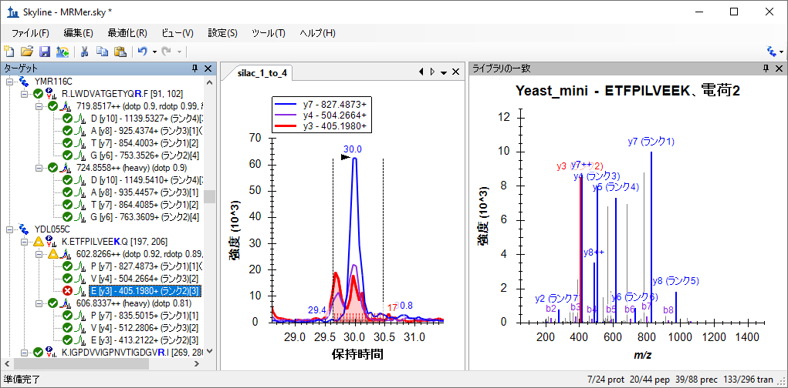
上記のように、3つすべてのトランジションのクロマトグラムが表示されない場合、以下の操作を行います。
ここでy3とy4はともに何らかの干渉を受けて、完全に分離されていない2本のピークとして表示されています。これらが、同一ペプチド由来ではないことは明らかです。なぜならy7には１本のピークしか見られませんし、y3とy4の2本に分かれたピークの相対強度が2つのトランジション間で異なるからです。
メソッドを改良している途中なら、MS/MSライブラリスペクトル上では測定可能であると思われるy5とy8を次回測定してみるのもいいでしょう。しかし、このデータから初期測定値だけでも得たいなら、以下の2通りのオプションがあります。
MacCoss labでは、1つ目のオプションを推奨しています。2つ目のオプションでは、干渉領域の境界を決める際に、人の判断に起因する誤差が生じるからです。しかし、このチュートリアルでは両方のオプションを試します。クロマトグラムプロットの場所を広げるため、次のセクションを始める前に以下の操作を行います。
幸運なことに、トランジション全体を削除しなくても単に「非定量」とマークできるようになりました。これによってこのようなトランジションを総ピーク面積計算から削除します。y3およびy4トランジションをライトピークグループから削除するには、以下の手順を行います。
[ ターゲット ] ビューで、y4テキスト「（比率0.37）」とy3テキスト「（比率0.59）」がライトのトランジションから消え、プリカーサー比率「（総比率0.31）」が「（総比率0.24）」に変更されます。非定量トランジションのテキストもグレーになり、クロマトグラムビューではy4とy3の線が点線になります。
プリカーサー総面積比は加重平均であり、 内部標準ピーク面積を重みとして、以下のように簡単な式で表すことができます。

ライトまたはヘビーピークのいずれかを削除すると、対応するトランジションのピークも削除されます。したがって一対のトランジションのみが残れば（このケースではy7）、そのトランジションのライトピークとヘビーピークの比率（ここでは0.24）が、プリカーサーの総面積比となります。
定量測定から干渉を除外するためにピーク積分境界を調整するには、以下の手順を行います。
これにより以下のような画面が表示されます。
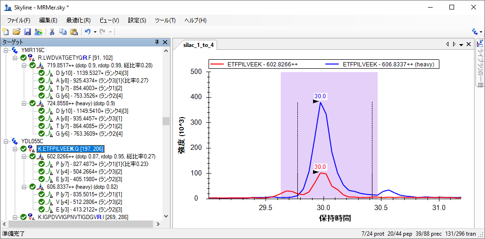
この場合、y4およびy3はそれぞれ比率0.31および比率0.35、y7は0.23となり、加重平均の式から、プリカーサー総比率は0.27となります。
干渉を解決する2つの異なる手法により算出された2つの総比率値0.24および0.27は、この1:4（ライト：ヘビー）SILAC混合の真の比率0.25にどちらも非常に近い値となっています。しかし干渉が見られたピーク（EFPペプチドのy3およびy4）の比率は1:4よりはむしろ1:3に近く、手動での調整手法が本当に機能しているかどうかは疑わしいところです。そのため、定量を行う際にはそのようなトランジションを完全に削除することを推奨します。
このドキュメントのデータをさらに詳しく見てみると、ペプチドの比率のほとんどは予測値0.25に限りなく近くなっています。また、プリカーサーが3以上のトランジションを持つ場合、ピーク面積とそれに対応するMS/MSピーク強度とのドット積（dotp）値が表示されます。これらのほとんどは1.0に非常に近く、つまり完全に一致していると言えます。また、ライトの標準ピークとヘビーの標準ピークとの間のピーク面積間で計算された比率ドット積（rdotp）のほとんどの値は1または1に非常に近い値であり、これはライトトランジションピーク面積とヘビートランジションピーク面積の間にかなり高い類似相対的強度があることを示すものです。
最後に、このチュートリアルの2つ目のドキュメントに移る前に、他のペプチドには緑または赤の丸印がついているのに、2つのペプチド（K.YVDPNVLPETESLALVIDR.LおよびK.FPEPGYLEGVK.T）の持つトランジションは印のないものばかりであることに、気付かれたのではないでしょうか。これは、インポートしたmzXMLファイルにこれらのトランジションに関するデータが含まれていないことを示しています。mzXMLファイルはテキストエディタ内で開くことができ、プリカーサーm/z値を検索して、元のトランジションリストにそのプリカーサーのトランジションがないことを確認できます。この手の齟齬は、手動でもしくはSkylineほど利用・試用されていないツールで作成されたトランジションリストによく見うけられます。
このセクションでは、研究室間研究CPTAC Study 72 を取り上げます 。同研究は、2008年のSkylineバージョン0.1の最初のリリース以前に、検証作業グループにより完遂されました 。トランジションメソッドはスプレッドシートを使用して作成され、結果のMSデータはベンダー独自のソフトウェアを用いて解析されました。
ここでも、まずは既存のトランジションリストからSkylineのドキュメントを作成します。Skylineへのトランジションリストの取り込みにおける最初の手順は、当該トランジションリストを確認してそのリスト内のm/z値をSkylineが識別するのにどんな設定が必要かを調べることです。これを確認するには、以下の操作を行います。
以下のようなスプレッドシートが表示されます。

これは誰かが相当な労力をかけて手動で作成したスプレッドシートなのでしょう。境界線、統合セル、ハイライト表示を利用して、この一連のトランジションを他人にわかりやすく表示しています。この作業をSkylineは自動で行います。
このリスト内の各ペプチドは、ライト・ヘビーの形式になっています。各ヘビーペプチドの「Signature Peptide」列において、安定同位体標識アミノ酸残基のみが赤でハイライト表示されています。リスト全体をスクロールダウンすると、4通りの標識スキームがあることがわかります。
これらの標識スキームは、MRMerドキュメントのように、グローバル修飾のみで表示することはできません。なぜならリジンおよびアルギニン標識ペプチドの一部は、内部バリンおよびロイシンも含むからです。最も簡単な解決方法は、MRMerドキュメントで行ったように、C末端リジンおよびアルギニンのグローバル修飾を利用して、その後バリンおよびロイシン修飾を手動で適用することです。
Study 7のトランジションリストに適切な修飾を備えた新しいドキュメントを作成するには、以下の手順を行います。
アルギニン分子内にあるすべての炭素原子に 13Cを使用し、総質量シフトが6ダルトンとなる（6x 13C）ように、[ 13C ] チェックボックスが自動的にオンになります。
[ 同位体修飾を編集 ] は以下のように表示されます。
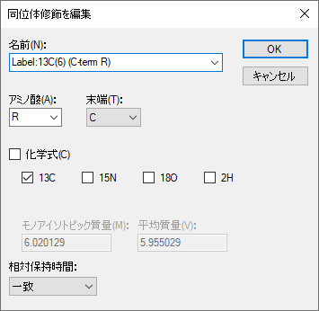
以下の手順を行って、Study 7のトランジションリストのドキュメント作成を完了します。
ターゲットをSkylineに追加し始めるには、以下の手順を実施します。
このページには、66のトランジションのリストが表示されます。これは、当研究で利用された4000 QTRAP装置にインポートされたものです。しかしながら、Skylineの設定にはバリンおよびロイシン標識のペプチドのヘビートランジションを扱う情報がまだ不足していることに留意してください。これを修正するには、以下の操作を行います。
Excelには、「Raw」タブにあるのと同じデータで、バリン標識とロイシン標識の3個のヘビープリカーサーに対する9のトランジションが削除されたバージョンを表示します。残りの57のトランジションを新規のSkylineのドキュメントに追加するには、以下の手順を行います。
これによって、以下のような [トランジションリストのインポート：列の識別 ] フォームが表示されます。
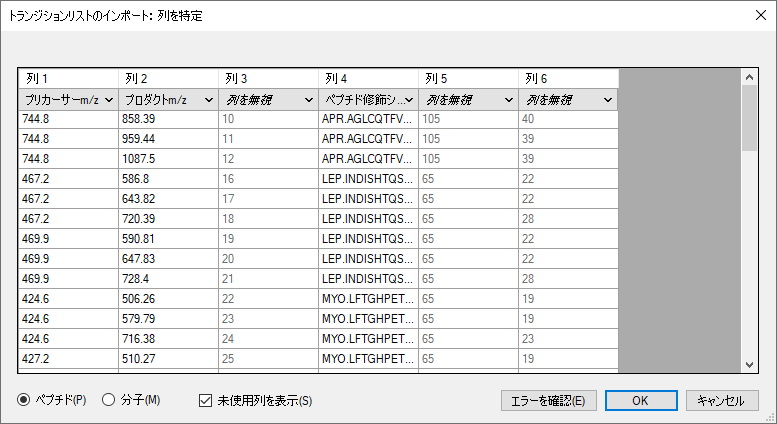
Skylineに以下のようなエラーメッセージが表示されます。
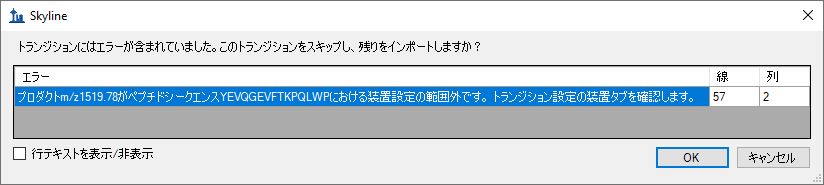
Skyline以外で作成されたトランジションリストを用いて作業する場合、このメッセージがしばしば表示されます。その他のエラーメッセージについては、この項目のSkyline取扱説明ビデオで説明されています（ ビデオ3：既存実験）。この手のエラーが起こる、主な原因は以下の通りです:
今回は3つ目の原因に当てはまっており、メッセージに表示されている通りに [ トランジション設定 ] の [ 装置 ] タブをクリックします。
このエラーを訂正するには、以下の手順を行います。
この操作により、Skylineのペプチドビューは以下のように表示されます。

8つのペプチドについてはC末端KまたはRが青い太字でハイライト表示されていますが、その他3つのペプチドには標識アミノ酸が表示されていません。これらのペプチドについてはVまたはLの標識の設定を別途行う必要があります。これらの修飾は、[ ペプチド設定 ] - [ 修飾 ] タブでは行えないからです。
最初のペプチドのVの同位体修飾を指定するには、以下の手順を行います。
[ 同位体修飾を編集 ] は以下のように表示されます。
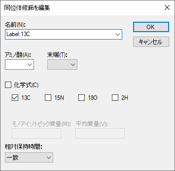
この修飾は、含まれる炭素原子の数に応じて、アミノ酸ごとに異なる質量シフトを適用します。
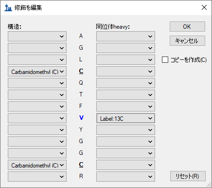
選択したペプチド内のバリンはまだ太字ではありません。なぜならこのペプチドはまだヘビープリカーサーが追加されていないからです。ここでヘビープリカーサーを追加するには、以下の手順を行います。
ペプチドビューは以下のように表示されます。
今度は「744.8398++」プリカーサーと「747.3481++ (heavy)」プリカーサーの両方を展開します。
イオンが一致するトランジションを含み、それが予想どおり5ダルトン異なることを確認します。
残りの2つのペプチドの標識プリカーサーを作成するには、以下の手順を行います。
これで、元のStudy 7のトランジションリスト内の情報を正確に反映したSkylineのドキュメントができました。
大手三連四重極ベンダー5社（Agilent、SCIEX、Shimadzu、Thermo、Waters）からのサポートのお蔭で、それらのフォーマットを変換せずにインポートできる完璧なサポート機能がSkylineには備え付けられています。つまり、SCIEX 4000 QTRAPを使ってこれらのトランジションを測定した研究所のデータを取得し、そのまま、データをこのドキュメントにインポートできるということです。そのためには以下の手順を行ってください。
複数サンプルを含んだWIFFファイル内のサンプル名のリストを読み取るのに1～2秒かかるかもしれませんが、その後以下のようなフォームが表示されます。
このチュートリアルでは、インポートに必要な時間を短縮するため以下の手順を実行します。
以下のメッセージがSkylineに表示され、ここで、これらすべての繰り返し測定ファイルの名前から、共通のプリフィックスである「7_3_」を削除することができます。
Skylineが、このWIFFファイルから高性能データファイル（Study 7.skyd）へと、データのインポートを開始します。これにより、より迅速なアクセスが可能となり、ドキュメントへインポートされたすべてのデータは容易に共有できるように一つのファイルに圧縮されます。
Skylineが生データをインポートしている間に（数分かかることがありますが、最新の4コアi7プロセッサでは11秒しかかかりません）、グラフビューを見やすいように配置することができます。繰り返し測定間のピーク面積および保持時間を比較するビューを表示し再配置するには、以下の手順を行います 。
現在選択されているペプチド「YEVQGEVFTKPQLWP」はCRPタンパク質のC末端ペプチドですが、Study 7の検証作業グループにとっては扱いづらいペプチドでした。Skylineにこのデータをインポートしても、繰り返し測定間で対応するピークが積分されていないランがあります。大概は約24.7分で積分されていますが、複数の保持時間外れ値があり、25分以降にある保持時間の近いピークでさえも、同一ペプチドには見えません。問題は、スパイクされたヘビーペプチドのピーク強度が内在性ライトペプチドと比べて決して強いわけではない、ということです。
注：繰り返し測定チャートのバーの上をホバリングしていって手のカーソルが現れたところでクリックすると、対応する繰り返し測定のクロマトグラムを表示できます。これを利用することで、誤って同定された可能性のある各ピークのクロマトグラムに対してMRMerドキュメントで行ったときと同じように、X軸の下をクリック・ドラッグしてピークの積分境界を修正することができます。しかしこのチュートリアルでは、検証作業グループが後続実験を行ったため、このペプチドを削除して構いません。
このドキュメント内の他のペプチドのピーク積分については、Skylineがうまく機能したことがわかります。しかしながら、ペプチドが10しかないデータセットでは、各ペプチドを慎重に確認して明らかにおかしいと思われるところには手作業で調整することを強く推奨します。
まず上記画像の、ペプチド「IVGGWECEK」のプリカーサー「541.7637++ (heavy)」は欠陥のあるデータであることが分かります。というのも、質量分析計に与えられたトランジションリストにはプリカーサーm/zの小数第一位までしか指定しておらず、誤って「541.7」と概算されているからです。このことは、Excelスプレッドシートの「Raw」タブで確認することができます。
このドキュメント内の、正しくm/zが計算されたプリカーサーを測定データと一致させるには、以下の手順を行います。
これにより、「541.7637++ (heavy)」プリカーサーの横に緑の丸印が表示されます。
積分時のもう1つの問題は、ペプチドビュー内の多くのトランジションにオレンジおよび赤い丸印が付いているということです。これは、ピークエリアが積分されていないトランジションであることを示します。この機能は、 ターゲットメソッド調整チュートリアルで説明されている通り、メソッド調整のある段階においては非常に有用ですが、このような十分調整されたメソッドが使用されている場合には、通常関連する情報は提供しません。このため、最も強いピーク境界間の全トランジションのピーク面積を積分し、赤いドットインジケータをトランジションの面積がゼロの場合のみ表示するように変更するオプションがあります。
これをオンするには以下の操作を行います。
| 注：Skyline 4.2以前のように、この設定が定量計算に影響することはありません。現在は、[ ターゲット ] ビューのカラードットと、Skylineレポートの「ピーク検出率」欄にのみ影響します。 |
以下のような画面が表示されます。
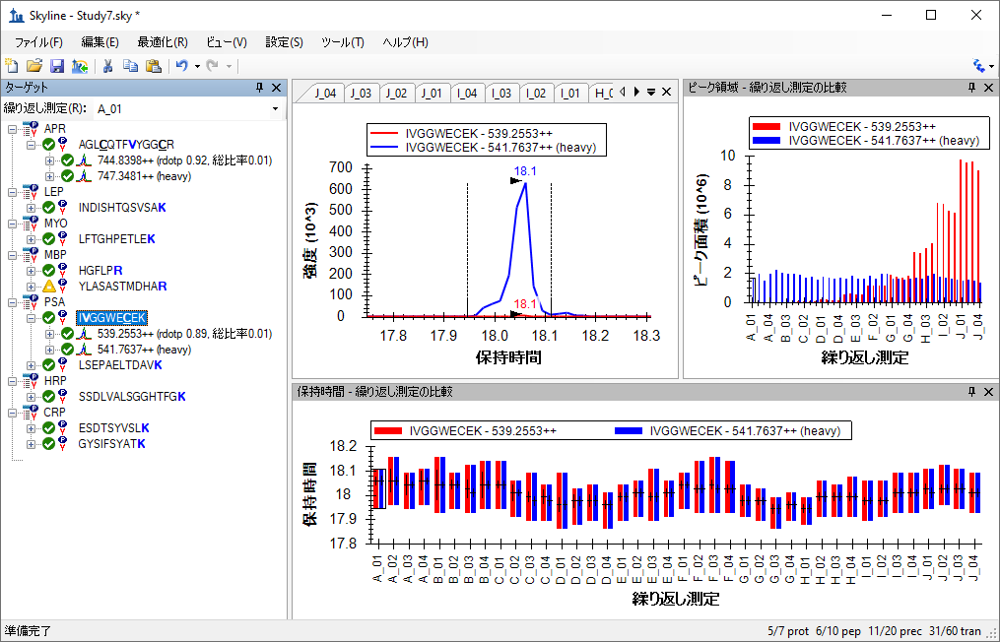
上記画像内の [ ピーク面積 ] ビューを見れば、Study 7の実験目的が何であったかがはっきりわかります。各濃度4回のテクニカル反復測定結果をもとに校正曲線を得るためだったのです。ヘビー同位体標識内部標準が一定濃度で注入されましたが、注入回数が50を超えるとそのピーク面積が徐々に減衰していることがわかります。ところが [ 保持時間 ] ビューを見ると、ペプチドの保持時間は非常に安定しており、スケジュール化されたランでこのペプチドを利用することに何ら問題がなかったことがわかります。
このセクションでは、[ ピーク面積 ] ビューおよび、複数繰り返し測定データセットを解析できる様々なオプションに焦点を当てます。画面上で [ ピーク面積 ] ビューを大きく表示するには、以下の操作を行います。
[ ピーク面積 ] ビューがSkylineのメインウィンドウに現れ、フロート表示されます。[ ターゲット ] ビューの時と同じ方法で再配置します。
開始するには、以下の操作を行います。
最初のペプチドおよび最後の5つのペプチドについては、上記画像に似たピーク面積チャートが表示されますが、他の4つのペプチドに関してはかなり定量精度が低いです。
安定同位体標識標準ペプチドを同時注入する主な理由の一つとして、内在性非標識ペプチドのピーク面積を標準化できることが挙げられます。これにより、測定値のラン間のばらつきを小さくできます。これを [ ピーク面積 ] ビュー内で見るには、以下の操作を行います。
ペプチドSSDLVALSGGHTFGKが選択された状態で、標準化チャートが以下のように表示されます。
実際に各濃度の繰り返し測定の精度が向上したことがわかります。
その他の4つのペプチドを再確認してみると、期待したパターンがまだ表示されていないことがわかります。
トランジションごとのピーク面積比を標準化してチャート化することもできます。定量精度の高いペプチドは、トランジション間のライト/ヘビー定量比が比較的近い値になっているはずです。トランジションの定量比を個別に確認するには、以下の手順を行います。
6つの定量精度の高いペプチドのうちの一つ、ESDTSYVSLKペプチドライトプリカーサー564.7746++については、以下のようなチャートが得られます。
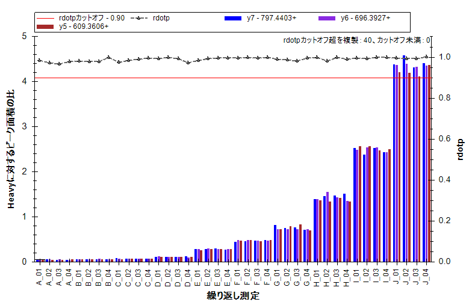
予想通り、トランジション間の定量比はかなり近い値になっています。2つ目および3つ目のペプチド（INDISHTQSVSAKおよびLFTGHPETLEK）ではこれほど理想的な結果は得られませんでしたが、トランジション比における深刻な問題はありません。
ピーク面積グラフは以下のように表示されます。
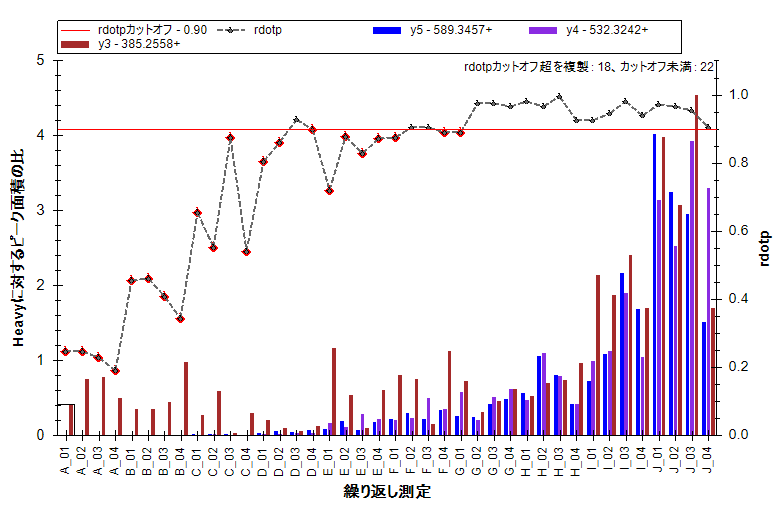
このグラフはy3のトランジションで干渉があったことを示しています。なぜなら、低濃度における定量比がこのペプチドのその他のトランジションとあまりに異なっているからです。
[ ピーク面積 ] ビューでは、別の方法でプリカーサー内のトランジションの相対強度を調べることができます。その方法で、HGFLPRペプチドをもう一度検討してみます。以下の操作を行ってください。
チャートは以下のように変更されます。
ここでも、このチャートは明らかにy3のトランジション（茶色）で干渉があったことが示されており、E以降の繰り返し測定では、内在性ペプチドの濃度が増加するにつれてその干渉が少なくなっています。クロマトグラムチャートと同時に閲覧できるような位置にピークエリアビューを移動させると、個別のバーをクリックしていくことで干渉ピークを見ることができるようになります。この場合では以下の繰り返し測定E_03で見られるように、干渉ピークはかなりはっきりしています。
MRMerドキュメントと同じように、積分境界を調整して干渉ピークを除外してみることは可能ですが、ペプチドの総ピーク面積に対してy3トランジションのピーク面積は大きくないため、y3トランジションを完全に消去するか、非定量にするほうが良いでしょう。これらの測定精度を評価したい場合は、以下の手順を行います。
[ ピーク面積 ] チャートは以下のように変更されます。
ペプチドがこの順序で並んでいない場合、以下の操作を行います。
当然ながら、赤で表示されているアナライトプリカーサーについては、変動係数（CV）が非常に大きくなりますが、気にする必要はありません。なぜならこれは、アナライトペプチドにつき10の異なる濃度ポイントが含まれたデータセットだからです。しかし青で表示されるヘビープリカーサーのCV値は重要です。なぜなら、それらは一定濃度ですべてのサンプルに含まれているはずだからです。これまでご覧いただいた内容を前提とすれば、同定された6つのペプチドは理想的な濃度変動を示しており、CV値が10%前後もしくはそれ以下となっていることは驚くべきことではありませんが、他の4つのペプチドのCV値は40%または50%程度です。
Skylineでいくつか簡単な操作を行うだけで、このデータセットについて学ぶことができました。これは元の研究では、検証作業グループが学ぶのに何週間もかかり、統計学者やプログラマーの介入が必要であった内容です。ターゲットメソッド調整チュートリアルを修了されている場合、なぜ実際に貴重な試料を測定する前に、標的ペプチドの挙動を予測できるようになるまで、何度も繰り返し測定をし、少しずつ測定メソッドを最適化していくのかが想像できるでしょう。
繰り返し測定グラフ内のデータに、X軸に繰り返し測定の名前ではなくサンプルの濃度が表示されていれば、よりわかりやすくなります。
Skylineには、校正曲線に対する広範な固有のサポートがあります。詳細については、絶対的定量化チュートリアルを参照してください。今回は、単に固有のアナライト濃度注釈を使用してSkylineにこのような繰り返し測定実行における濃度のピークに関する詳しい情報を提供します。
これには、[ ドキュメントグリッド ] が使用できます。[ アナライト濃度 ] レポート欄を表示するには、以下の操作を行います。
[ ドキュメントグリッド ] には、40行にわたって試料1つにつき1行ずつ、[ 繰り返し測定 ]、[ 試料タイプ ]、[ アナライト濃度 ] 欄が表示されます。サンプルが調製された時の濃度は以下の通りです。
| サンプル | A | B | C | D | E | F | G | H | I | J |
| 濃度（fmol/µL） | 0 | 60 | 175 | 513 | 1500 | 2760 | 4980 | 9060 | 16500 | 30000 |
これらの値の入力が終わると、[ ドキュメントグリッド ] は以下のようになります。
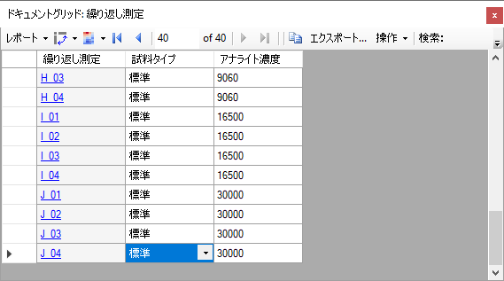
今度は以下の操作を行って、新しく入力された濃度を [ ピーク面積：繰り返し測定比較 ] グラフで使用できます。
[ ピーク面積 ] グラフは以下のように表示されます。
このグラフでは、かなり低い濃度でもCV値は極めて低いことが示されています。以下の操作を行って、平均のピーク面積比とともに標準偏差をエラーバーで示すグラフに切り替えることができます。
これによりグラフは以下のように変更されます。
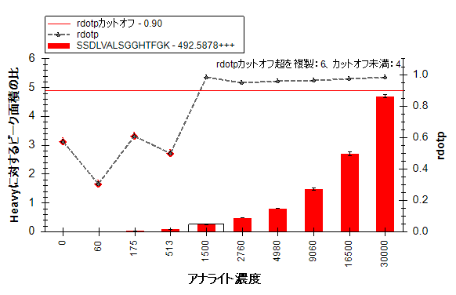
8つの異なる研究室がStudy 7に参加し、それぞれの研究室が、このチュートリアルで確認してきたようなデータセットをいくつか作成しました。しかし、すべての研究室が同じ問題を同じように抱えていたわけではありません。異なる研究室からの、あるいは本研究の異なるサブセクションからのデータも、このチュートリアルには含まれています。ここではドキュメントはすでに作成されており、データセットはすでにインポートされています。
site 52から得られたStudy 7-IIのデータを含むドキュメントを開くには、以下の手順を行います。
ファイルはすぐに開かれ、注入された同位体標識標準のCV値がペプチド間で異なっていることが示されます。以下のチャートのように表示されます。
最初の4つのデータセットのうち、CV値が40%を超えているペプチドはINDISHTQSVSAKだけですが、ペプチドLSEPAELTDAVKのCV値は約25%になりました。
[ 保持時間：繰り返し測定比較 ] グラフを見てみると、「空白」繰り返し測定のうち3つについてSkylineは誤ったピークを選択しています（これはすでにかなり前に修正されていますが、ドキュメントデータがインポートされ、保存された後です）。
X-軸の下をクリック・ドラッグしてこれらのピークを修正すると、LSEPAELTDAVKのヘビープリカーサーのCV値は約10%まで低下し、その他のペプチドと同程度になります。
このデータセットのライト：ヘビーの比率を再確認するには、以下の手順を行います。
すべてのペプチドのチャートを表示できます。このデータセットではINDISHTQSVSAKでさえもかなり理想的な結果が表示されます。
内部標準によりこのペプチドの定量におけるばらつきが補正されたことがわかります。非標準化データを再確認するには以下の操作を行います。
このチャートを見て、標準化することによって結果がこんなに劇的に改善されるであろうことを推測するのは難しかったことでしょう。
最後に、最初のデータセットで干渉が検出されたペプチドを取り上げます。
ここでも、y3トランジションで干渉があったことがはっきりとわかります。
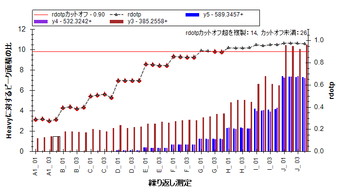
しかし最初のデータセットのときとは違い、個々のクロマトグラムを確認しても、干渉は見つけづらくなっています。ここでは、クロマトグラフィーの条件が最初のデータセットとは少し異なるために、y3の積分区域内に2つのピークが混在していると気付くのはほぼ不可能です。以下に繰り返し測定E_03のクロマトグラムを示します。
NCI CPTAC Study 7は、非常に多くのデータを提供しており、現在そのデータのすべてが公開されています。この研究はSkylineの存在を知っている研究者がいない状態で行われたのですが、それでもSkylineを利用してこのデータから短時間で多くを学ぶことができます。
このチュートリアルでは、Skylineでデータを扱うことを想定せずに行われた実験から得られたデータをSkylineで簡単に解析できることを学びました。Skylineを使い始める前のご自身の実験であろうと、確認、再現したい他者の実験であろうとSkylineを使って簡単にデータ解析ができます。MRMerおよびNCI CPTAC Study 7で公開されたデータセットについて、同位体標識内部標準を含む比較的複雑な修飾スキームが含まれていましたが、トランジションリストからSkylineドキュメントをすぐに作成できました。
また、同位体標識ペプチドプリカーサーを利用した定量的ターゲットプロテオミクスを行うためのSkylineの機能についても少し学びました。同位体標識修飾を指定するところから、それらを適用するところまで、Skylineを使えば定量実験のための装置毎のメソッドを簡単に作成することができます。正確なライト：ヘビーのピーク面積比から始まり、強力なチャート表示オプションに至るまで、Skylineは定量実験で集められたデータを詳細に解析するための様々なツールを提供します。
1. Martin,D.B. et al. MRMer, an interactive open source and cross-platform system for data extraction and visualization of multiple reaction monitoring experiments. Mol. Cell Proteomics. 7, 2270-2278 (2008).
2. Addona,T.A. et al. Multi-site assessment of the precision and reproducibility of multiple reaction monitoring-based measurements of proteins in plasma. Nat. Biotechnol. 27, 633-641 (2009).